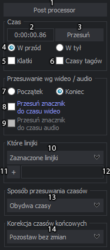
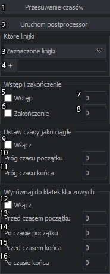
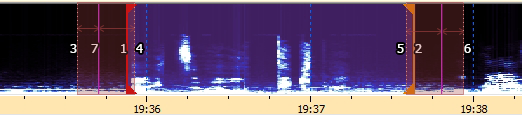

Przesuwanie czasów napisów i post processor
Przesuwanie czasów napisów
Aby przesunąć czasy napisów należy otworzyć okno "Przesuwania czasu napisów" skrótem Ctrl+I, bądź z menu "Napisy > Przesuń czasy", albo klikając na pasku narzędzi po lewej stronie ikonę  (ponowne kliknięcie zamyka to okno w razie potrzeby).
(ponowne kliknięcie zamyka to okno w razie potrzeby).

- Włączanie i wyłączanie time posptrocessora.
- Pole czasu przesunięcia, w przypadku opcji 6 i 7 ten czas jest dodawany do czasu wideo / audio, więc należy je wtedy wyzerować najszybszy na to sposób to chwycić prawym przyciskiem godziny i pociągnąć prawo.
- Przycisk przesuń zatwierdza operację przesuwania czasów, to samo można też zrobić enterem, po zmianie, którejś z ustawień tego okna.
- Zmiana przesuwania czasu w przód bądź w tył.
- Zmienia czas na klatki w polu czasowym (2) działa tylko na FFMS2 ze względu na poprawną kalkulację klatek.
- Pozwala na przesunięcie czasów w \t, \fad i \move tak, by po przesunięciu nie było zmiany na wideo.
- Ustawia czas początkowy / końcowy linii ze znacznikiem (17) do czasu wideo / znacznika audio.
- Po zahaczeniu ustawia czas linii ze znacznikiem (17) do czasu wideo.
- Po zahaczeniu ustawia czas linii ze znacznikiem (17) do znacznika audio, którego wstawianie jest opisane poniżej.
Opcja 8 i 9 jest lepiej opisana poniżej.
- Lista wyboru linijek do przesunięcia, do wyboru są:
- Wszystkie linijki,
- Zaznaczone linijki,
- Od zaznaczonej linijki, czyli wszystkie linijki od pierwszej zaznaczonej z nią włącznie.
- Czasy wyższe bądź równe czyli wszystkie linijki z czasami wyższymi bądź równymi od pierwszej zaznaczonej linii.
- Czasy mniejsze bądź równe czyli wszystkie linijki z czasami mniejszymi bądź równymi od pierwszej zaznaczonej linii.
- Według wybranych stylów, które można wybrać klikając na "+" poniżej. 4, 5 i 6 opcja działa tylko przy napisach ASS.
- Wybieranie stylów, które działa tylko z opcją według wybranych stylów.
- Pole tekstowe wyświetlające wybrane style.
- Z tej listy można wybrać czy chcemy przesuwać tylko czas początkowy, końcowy czy oba.
- Korekcja czasów końcowych, do wyboru są:
- Zostaw bez zmian,
- Skoryguj nachodzące czasy,
- Nowe czasy.
Time post processor

- Włącza przesuwania czasów.
- Włącza post processor.
- Lista wyboru linijek do przesunięcia, do wyboru są:
- Wszystkie linijki,
- Zaznaczone linijki,
- Od zaznaczonej linijki, czyli wszystkie linijki od pierwszej zaznaczonej z nią włącznie.
- Czasy wyższe bądź równe czyli wszystkie linijki z czasami wyższymi bądź równymi od pierwszej zaznaczonej linii.
- Czasy mniejsze bądź równe czyli wszystkie linijki z czasami mniejszymi bądź równymi od pierwszej zaznaczonej linii.
- Według wybranych stylów, które można wybrać klikając na "+" poniżej. 4, 5 i 6 opcja działa tylko przy napisach ASS.
- Wybieranie stylów, które działa tylko z opcją według wybranych stylów.
- Włącza dodawanie wstępu.
- Czas wstępu.
- Włącza dodawanie zakończenia.
- Czas zakończenia.
- Włącza ustawianie czasów jako ciągłych.
- Próg czasu początku mówi ile proporcjonalnie przesunąć czas początkowy następnej linijki, by zrównać ją z czasem końcowym poprzedniej.
- Próg czasu końca mówi ile proporcjonalnie przesunąć czas końcowy linijki, by zrównać ją z czasem początkowym następnej. Przykładowo gdy w polu (10) ustawimy 100 a w polu (11) 300 to czas końcowy przesunie się o 3/4 różnicy między oboma liniami.
- Włącza wyrównywanie do klatek kluczowych.
- Wraz z polem (14) ustawia granice, w których czas początkowy zostaje wyrównany do klatki kluczowej, jest to czas początkowy minus podana liczba
- Wraz z polem (13) ustawia granice, w których czas początkowy zostaje wyrównany do klatki kluczowej, jest to czas początkowy plus podana liczba. W tym polu lepiej nie przekraczać 50 ms, by zbytnio nie skracało linijek, no chyba że ustawimy wstęp w polu (7).
- Wraz z polem (16) ustawia granice, w których czas końcowy zostaje wyrównany do klatki kluczowej, jest to czas końcowy minus podana liczba. W tym polu lepiej nie przekraczać 50 ms, by zbytnio nie skracało linijek, no chyba że ustawimy zakończenie w polu (8).
- Wraz z polem (15) ustawia granice, w których czas końcowy zostaje wyrównany do klatki kluczowej, jest to czas końcowy plus podana liczba

Przesuwanie według audio / wideo może przyspieszyć przesuwanie, dzięki tej opcji nie trzeba liczyć czasu przesunięcia.
By skorzystać z przesuwania wg wideo należy ustawić wideo na danej klatce, później ustawić znacznik (17) znajdujący się na kolumnie z numeracją linijek można to zrobić w dwojaki sposób, kliknąć lewym przyciskiem na linijce i znacznik automatycznie ustawi się na tą klikniętą linijkę, lecz gdy potrzebujemy jednak by był w innym miejscu niż aktywna linia, to wystarczy kliknąć prawym przyciskiem na kolumnę z numeracją. Czas z ramki czas należy wyzerować no chyba, że zależy nam by przesunęło trochę przed aktualną klatką wideo bądź po.
W przypadku audio jest trochę trudniej, bo musimy ustawić znacznik audio w odpowiednim miejscu, aby to zrobić klikamy prawym przyciskiem w podziałkę z czasem audio  pojawi nam się znacznik
pojawi nam się znacznik  , który przesuwamy, klikając w niego lewym przyciskiem.
, który przesuwamy, klikając w niego lewym przyciskiem.
Można też odsłuchać 700 ms przed i po znaczniku korzystając ze skrótów klawiszowych ustawionych w opcjach, bądź kliknąć  resztę ustawiamy tak samo jak powyżej.
resztę ustawiamy tak samo jak powyżej.
Wyrównywanie do klatek kluczowych, by łatwiej to wyjaśnić użyję kawałku wykresu z oznaczeniami.

Na tym przykładzie (1) to czas początkowy, (3-4) to granica przesunięcia do klatki kluczowej dla czasu początkowego na pierwszym obrazku są to numery (21) - 300 milisekund i 22 - 50 milisekund.
Dla czasu końcowego (2) granice przesunięcia (5-6) są numery (23) - 50 milisekund i (24) - 300 milisekund.
Klatki kluczowe są zaznaczone jako różowe linie (7). Opcja ta działa nawet gdy nie ma wczytanego audio, wystarczy tylko wideo wczytane przez FFMS2.
Wyrównywanie do klatek kluczowych następuje tylko wtedy, gdy w przedziale oznaczonymi liniami przerywanymi (3-4) i (5-6) znajduje się jakaś klatka kluczowa. W tym przykładzie ten warunek zostanie spełniony ale tylko do czasu początkowego (1), który zostanie przesunięty do klatki kluczowej (7).
Tej opcji nie należy włączać gdy wideo ma źle powstawiane klatki kluczowe, są np co 3 sekundy niezależnie od zmian scen.
Created with the Personal Edition of HelpNDoc: Full-featured multi-format Help generator